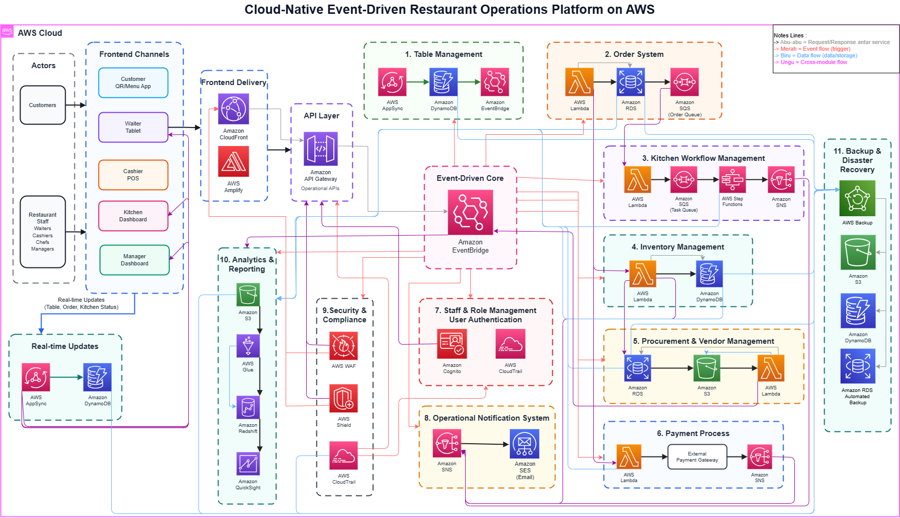

A cloud-native, event-driven architecture that connects ordering, kitchen workflow, inventory, procurement, payment, notification, authentication and analytics into one scalable platform on AWS. This page walks through how the pieces connect and what each service is responsible for.
Customers and restaurant staff enter through five dedicated channels. Requests pass through the API layer, events are routed by a central bus, and each business module handles its own data and logic. Click the diagram to open it in full size.

From the moment a guest scans the menu to the dashboard a manager reads at the end of the day, this is the path that data follows.
Every module owns one responsibility. The service chain under each card shows the order in which its AWS services are used.
EventBridge routes business events to the modules that care about them, so a new order can trigger kitchen, inventory and notification work without those modules calling each other directly.
Lambda, DynamoDB, SQS, SNS and Step Functions scale with demand and need no server management, which suits the busy and quiet hours of a restaurant.
Queues and events sit between modules. If one part is slow or fails, the others keep working and messages wait safely in the queue.
WAF and Shield protect the edge, Cognito controls roles, CloudTrail records activity, and AWS Backup protects the data stores for disaster recovery.
Go back to the project highlights to see other work in data, machine learning and UI/UX design.
Back to Project Highlights